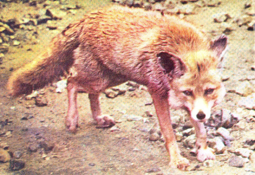

<head>
<meta http-equiv="Content-Type" content="text/html; charset=windows-1252">
<meta name="GENERATOR" content="Microsoft FrontPage 4.0">
<meta name="ProgId" content="FrontPage.Editor.Document">
<title>New Page 1</title>
<meta http-equiv="Content-Type" content="text/html; charset=windows-1252">
<meta name="GENERATOR" content="Microsoft FrontPage 4.0">
<meta name="ProgId" content="FrontPage.Editor.Document">
<title>ECONOMICALLY IMPORTANT PLANTS OF INDIA compiled by K</title>
<meta http-equiv="Content-Type" content="text/html; charset=windows-1252">
<meta name="GENERATOR" content="Microsoft FrontPage 4.0">
<meta name="ProgId" content="FrontPage.Editor.Document">
<title>ECONOMICALLY IMPORTANT PLANTS OF INDIA</title>
<meta http-equiv="Content-Type" content="text/html; charset=windows-1252">
<meta name="GENERATOR" content="Microsoft FrontPage 4.0">
<meta name="ProgId" content="FrontPage.Editor.Document">
<title>New Page 1</title>
<META HTTP-EQUIV="CONTENT-TYPE" CONTENT="text/html; charset=windows-1252">
<TITLE>Aegle marmelos </TITLE>
<META NAME="GENERATOR" CONTENT="Microsoft FrontPage 4.0">
<META NAME="CREATED" CONTENT="20010726;17265013">
<META NAME="CHANGEDBY" CONTENT="L.Sowmya">
<META NAME="CHANGED" CONTENT="20020726;13003551">
<META NAME="DESCRIPTION" CONTENT="Economically Important Plants">
<META NAME="KEYWORDS" CONTENT="Abies pindrow">
<META NAME="ProgId" CONTENT="FrontPage.Editor.Document">
<STYLE>
	<!--
		P { color: #2c9a97 }
	-->
	</STYLE>
<meta name="Microsoft Theme" content="none">
<link>
</head>

<body LANG="en-US" bgcolor="#CCCCCC" text="#009999">
<P><A NAME="begin"></A>
</P>
<table border="1" width="100%">
  <tr>
    <td width="100%" bgcolor="#1658BC">
      <P ALIGN=CENTER><b><font face="Verdana" size="6" color="#FFFFFF">Digitized
      Inventory of Animal Resources: Mammalia&nbsp;</font></b> <font color="#FFFFFF"><br>
      <b>
      Principal Investigator: Dr. R. J. B Alfred, Co-Investigator: Dr. Rama Krishna, Contributed by:
      Dr. M.S. Pradhan</b></font><br>
      </P>
    </td>
  </tr>
</table>
<p ALIGN="CENTER">&nbsp;</p>
<p ALIGN="CENTER">&nbsp;</p>
<P ALIGN=center><b><font size="6" face="Comic Sans MS" color="#009999">&nbsp;&nbsp;</font><a href="http://stp.unipune.ernet.in/zsi/photomap.html?code=26"><b style="mso-bidi-font-weight:normal"><i style="mso-bidi-font-style:normal"><font face="Abadi MT Condensed Light" size="6" color="#808000"><span style="mso-ansi-font-size: 9.0pt; mso-bidi-font-size: 12.0pt; mso-fareast-font-family: Times New Roman; mso-bidi-font-family: Times New Roman; mso-ansi-language: EN-US; mso-fareast-language: EN-US; mso-bidi-language: AR-SA">Vulpes
vulpes pusilla</span></font></i><font face="Abadi MT Condensed Light" size="6" color="#808000"><span style="mso-ansi-font-size: 9.0pt; mso-bidi-font-size: 12.0pt; mso-fareast-font-family: Times New Roman; mso-bidi-font-family: Times New Roman; mso-ansi-language: EN-US; mso-fareast-language: EN-US; mso-bidi-language: AR-SA">,
Blyth</span></font></b></a><font face="Abadi MT Condensed Light" size="6" color="#808000">&nbsp;&nbsp;&nbsp;</font><font size="6" face="Comic Sans MS" color="#009999">&nbsp;&nbsp;&nbsp;&nbsp;&nbsp;&nbsp;&nbsp;&nbsp;&nbsp;&nbsp;&nbsp;&nbsp;</font></b></P>
<P ALIGN=LEFT><A HREF="#Taxonomic Details"><FONT FACE="Comic Sans MS">Taxonomic 
  Details</FONT> </A><FONT FACE="Comic Sans MS"><BR>
  ----- </FONT><A HREF="#Scientific Name"><FONT FACE="Comic Sans MS">Scientific Name</FONT></A><FONT FACE="Comic Sans MS"><BR>
  ----- </FONT><A HREF="#Classification"><FONT FACE="Comic Sans MS">Classification</FONT></A><FONT FACE="Comic Sans MS"><BR>
  ----- </FONT><A HREF="#Synonyms"><FONT FACE="Comic Sans MS">Synonyms</FONT></A><FONT FACE="Comic Sans MS"><BR>
  ----- </FONT><A HREF="#Common Names"><FONT FACE="Comic Sans MS">Common Names</FONT></A><FONT FACE="Comic Sans MS"><BR>
  </FONT><A HREF="#Other Biological Details"><FONT FACE="Comic Sans MS">Other 
  Biological Details</FONT></A><FONT FACE="Comic Sans MS"><BR>
  ----- </FONT><A HREF="#Habit and Habitat"><FONT FACE="Comic Sans MS">Habit and 
  Habitat</FONT></A><FONT FACE="Comic Sans MS"><BR>
  ----- </FONT><A HREF="#Distribution"><FONT FACE="Comic Sans MS">Distribution</FONT></A><FONT FACE="Comic Sans MS"><BR>
  ---------- </FONT><A HREF="#Extend of Occurance"><FONT FACE="Comic Sans MS">Extent of
Occurrence</FONT></A><FONT FACE="Comic Sans MS"><BR>
  ---------- </FONT><A HREF="#Area of occurance"><FONT FACE="Comic Sans MS">Area of
</FONT></A><A HREF="#Area of occurance"><font face="Comic Sans MS">occurrence</font></A><FONT FACE="Comic Sans MS"><BR>
  ---------- </FONT><A HREF="#Altitude:"><FONT FACE="Comic Sans MS">Altitude</FONT></A><FONT FACE="Comic Sans MS"><BR>
  ---------- </FONT><A HREF="#Population:"><FONT FACE="Comic Sans MS">Population</FONT></A><FONT FACE="Comic Sans MS"><BR>
  ----- </FONT>
  <A HREF="#Conservation Status:"><FONT FACE="Comic Sans MS">Conservation Status</FONT></A><FONT FACE="Comic Sans MS"><BR>
  ----- </FONT>
  <A HREF="#Diagnostic Features"><FONT FACE="Comic Sans MS">Diagnostic 
  Features</FONT></A><FONT FACE="Comic Sans MS"><BR>
  ----- </FONT>
<a HREF="#Breeding system"><FONT FACE="Comic Sans MS">Breeding system</FONT></a><FONT FACE="Comic Sans MS"><BR>
  </FONT><A HREF="#Miscellaneous Information"><FONT FACE="Comic Sans MS">Miscellaneous 
  Information</FONT></A><FONT FACE="Comic Sans MS"><BR>
  </FONT><A HREF="#Literature"><FONT FACE="Comic Sans MS">Literature</FONT></A></P>
<HR SIZE=3 COLOR="#0000ff">
<P><A NAME="Taxonomic Details"></A><FONT SIZE=6><FONT FACE="Monotype Corsiva"><FONT COLOR="#1658bc"><u>Taxonomic 
  Details</u></FONT></FONT></FONT> </P>
<HR SIZE=3 COLOR="#0000ff">
<P><A NAME="Scientific Name"></A><A NAME="Classification"></A><A NAME="Synonyms"></A><A NAME="Common Names"></A> 
  <FONT FACE="Comic Sans MS, sans-serif"><U>Scientific Name</U> :&nbsp;</FONT>&nbsp;&nbsp;&nbsp;&nbsp;&nbsp;&nbsp;&nbsp;&nbsp;<b><a href="http://stp.unipune.ernet.in/zsi/photomap.html?code=26"><b style="mso-bidi-font-weight:normal"><i style="mso-bidi-font-style:normal"><font face="Abadi MT Condensed Light" size="6" color="#808000"><span style="mso-ansi-font-size: 9.0pt; mso-bidi-font-size: 12.0pt; mso-fareast-font-family: Times New Roman; mso-bidi-font-family: Times New Roman; mso-ansi-language: EN-US; mso-fareast-language: EN-US; mso-bidi-language: AR-SA">Vulpes
vulpes pusilla</span></font></i><font face="Abadi MT Condensed Light" size="6" color="#808000"><span style="mso-ansi-font-size: 9.0pt; mso-bidi-font-size: 12.0pt; mso-fareast-font-family: Times New Roman; mso-bidi-font-family: Times New Roman; mso-ansi-language: EN-US; mso-fareast-language: EN-US; mso-bidi-language: AR-SA">,
Blyth</span></font></b></a><font face="Abadi MT Condensed Light" size="6" color="#808000">&nbsp;&nbsp;&nbsp;</font></b></P>
<p class="MsoNormal" style="margin-left:1.75in;text-align:justify">&nbsp;</p>
<P><font face="Comic Sans MS" size="3"><U>Classification</U><b><U>:</U></b></font></P>
<blockquote>
  <blockquote>
    <blockquote>
      <blockquote>
        <blockquote>
          <blockquote>
<P><span style="mso-bidi-font-size: 12.0pt; color: black"><font size="4" face="Arial">Order:<i style="mso-bidi-font-style:normal">&nbsp;&nbsp;&nbsp;</i><i style="mso-bidi-font-size: 12.0pt; color: black">&nbsp;</i><i style="mso-bidi-font-style:normal">&nbsp;&nbsp;&nbsp;</i><i style="mso-bidi-font-size: 12.0pt; color: black">&nbsp;&nbsp;
</i>Carnivora </o:p>
</font></span></P>
<P><span style="mso-bidi-font-size: 12.0pt; color: black"><font size="4" face="Arial">Family:<i style="mso-bidi-font-style:normal">&nbsp;&nbsp;&nbsp;</i><i style="mso-bidi-font-size: 12.0pt; color: black">&nbsp;</i><i style="mso-bidi-font-style:normal">&nbsp;&nbsp;&nbsp;</i><i style="mso-bidi-font-size: 12.0pt; color: black">&nbsp;</i><i style="mso-bidi-font-size: 12.0pt; color: black">
</i><i style="mso-bidi-font-style:normal">C</i><i style="mso-bidi-font-style: normal; mso-bidi-font-size: 12.0pt; color: black">an</i><i style="mso-bidi-font-style:normal">idae</i><o:p>
</o:p>
</font></span></P>
          </blockquote>
        </blockquote>
      </blockquote>
    </blockquote>
  </blockquote>
</blockquote>
<P><font face="Comic Sans MS, sans-serif" size="3"><BR>
  <U>Synonyms</U>:&nbsp;&nbsp;&nbsp;</font><i style="mso-bidi-font-style:
normal"><font face="Comic Sans MS, sans-serif" size="4"><span style="mso-bidi-font-size: 12.0pt; font-family: Verdana; color: black">Vulpes pusillus, Blyth and number of Synonyms as
reported by Alfred et al. (2002)</span></font></i><font face="Comic Sans MS, sans-serif" size="4"><span style="mso-bidi-font-size: 12.0pt; font-family: Verdana; color: black">
<span style="mso-bidi-font-size: 12.0pt; font-family: Verdana; mso-fareast-font-family: Arial Unicode MS; color: black"><o:p>
</span> </span></font><span style="font-size:9.0pt;
mso-bidi-font-size:12.0pt;font-family:Verdana;mso-fareast-font-family:&quot;Arial Unicode MS&quot;;
color:black"><font face="Comic Sans MS, sans-serif" size="3">
</o:p>
 </font>
</span> </P>
<P><font face="Comic Sans MS, sans-serif" size="3"><BR>
  <U>Common Names</U><SPAN STYLE="text-decoration: none">:&nbsp;&nbsp;&nbsp;&nbsp;</SPAN></font><font size="4"><span style="font-size:9.0pt;
mso-bidi-font-size:12.0pt;font-family:Verdana;color:black">Desert Fox, Red Fox,
White footed fox.</span><span style="font-size:10.0pt;mso-bidi-font-size:12.0pt;
color:black">&nbsp;<o:p>
</o:p>
</span>
</font>
</P>
<p class="MsoNormal" style="text-align:justify"><font size="4"><i style="mso-bidi-font-style:
normal"><span style="mso-bidi-font-size: 12.0pt; font-family: Verdana; color: black">&nbsp;&nbsp;&nbsp;</span></i><span style="mso-bidi-font-size: 12.0pt; font-family: Verdana; color: black"><i style="mso-bidi-font-style: normal; font-size: 9.0pt; mso-bidi-font-size: 12.0pt; font-family: Verdana; color: black">&nbsp;&nbsp;&nbsp;&nbsp;&nbsp;&nbsp;&nbsp;&nbsp;&nbsp;&nbsp;&nbsp;&nbsp;&nbsp;&nbsp;&nbsp;&nbsp;</i><i style="mso-bidi-font-style:
normal">Regional Names:</i>&nbsp;Hindi: Lomri,
Sindhi : Lokri</span><span style="mso-bidi-font-size: 12.0pt; font-family: Verdana; mso-fareast-font-family: Arial Unicode MS; color: black"><o:p>
</span></font><span style="font-size:9.0pt;mso-bidi-font-size:12.0pt;
font-family:Verdana;mso-fareast-font-family:&quot;Arial Unicode MS&quot;;color:black">
</o:p>
</span></p>
<P><FONT FACE="Comic Sans MS, sans-serif"><SPAN STYLE="text-decoration: none"><br>
  <BR>
  </SPAN></FONT><font face="Comic Sans MS"><BR>
  </font><BR>
</P>
<P ALIGN=RIGHT><A HREF="#begin"><U><FONT FACE="Comic Sans MS">Back to
Top</FONT></U></A></P>
<HR SIZE=3 COLOR="#0000ff">
<P><A NAME="Other Biological Details"></A><FONT SIZE=3><FONT SIZE=6><FONT FACE="Monotype Corsiva"><FONT COLOR="#1658bc"><u>Other 
  Biological Details</u></FONT></FONT></FONT></FONT> 
</P>
<p class="MsoNormal" style="text-align:justify"><font size="4"><font color="#FF0000"><i style="mso-bidi-font-style:
normal"><span style="mso-bidi-font-size: 12.0pt; font-family: Verdana"><b>Threats:&nbsp;</b></span></i><span style="mso-bidi-font-size: 12.0pt; font-family: Verdana">
</span></font><span style="mso-bidi-font-size: 12.0pt; color: black"><span style="font-size:9.0pt;
mso-bidi-font-size:12.0pt;font-family:Verdana;color:black"> Diseases, Habitat
Fragmentation, Agriculture and Farming, Human Interference, Loss of Habitat,
Trade, Hunting, Poisoning, Corridor Loss etc.;&nbsp;<i style="mso-bidi-font-style:
normal">Effect of threats on population (Perceived or inferred)</i>:&nbsp;Declining</span><span style="font-size:9.0pt;mso-bidi-font-size:12.0pt;font-family:Verdana;
mso-fareast-font-family:&quot;Arial Unicode MS&quot;;color:black"><o:p>
</o:p>
</span></span></font></p>
<p class="MsoNormal"><font size="4"><b><span style="mso-bidi-font-size: 12.0pt"><font color="#FF0000">&nbsp;</font><i style="mso-bidi-font-style:
normal"><font color="#FF0000"><span style="mso-bidi-font-size: 12.0pt; font-family: Verdana">Trade:&nbsp;</span></font></i></span></b><span style="mso-bidi-font-size: 12.0pt; color: black"><span style="font-size:9.0pt;
mso-bidi-font-size:12.0pt;font-family:Verdana;color:black"> Local, Domestic;&nbsp;<i style="mso-bidi-font-style:normal">Parts
in trade</i>:&nbsp;Skin, Fur;&nbsp;<i style="mso-bidi-font-style:normal">Effect
of trade on population (Perceived or inferred)</i>:&nbsp;Declining</span><span style="font-size:9.0pt;
mso-bidi-font-size:12.0pt;font-family:Verdana;mso-fareast-font-family:&quot;Arial Unicode MS&quot;;
color:black"><o:p>
</o:p>
</span></span></font></p>
<P>&nbsp; 
</P>
<HR SIZE=3 COLOR="#0000ff">
<P STYLE="margin-bottom: 0cm"><A NAME="Habit and Habitat"></A><U><FONT FACE="Comic Sans MS">HABIT 
  &amp; HABITAT</FONT></U><font color="#000000" size="4"><span style="font-family: Times New Roman; mso-fareast-font-family: Times New Roman; mso-ansi-language: EN-US; mso-fareast-language: EN-US; mso-bidi-language: AR-SA">&nbsp;&nbsp;&nbsp;&nbsp;&nbsp;&nbsp;&nbsp;&nbsp;&nbsp;&nbsp;&nbsp;&nbsp;&nbsp;&nbsp;&nbsp;&nbsp;&nbsp;&nbsp;&nbsp;&nbsp;&nbsp;&nbsp;&nbsp;
</span></font></P>
<p class="MsoNormal" style="text-align:justify"><font size="4"><span style="mso-bidi-font-size: 12.0pt; font-family: Verdana; color: black">Like Hill Fox, Desert Fox also
lives singly in non-breeding season. It is not a social animal in hunting
habits. It is the inhabitant of arid and semiarid regions. It is generally found
in sandy wastes, sand dunes and river beds with scattered bushes. It is a
nocturnal animal in habit and like Hill Fox feeds on rodents, small birds,
reptiles and insects like termites. It also feeds on fruits. It may pick up
discarded food and offal near human habitats. It breeds around winter and give
birth to 5-7 young ones in March- April. The habit of marking territories and
giving repeated high pitched calls by males is similar to that of Hill Fox. Red
Foxes are said to pair for life. A pair may occupy the same dune for years. Its
burrow may possess number of openings.<span style="font-size:9.0pt;
mso-bidi-font-size:12.0pt;font-family:Verdana;mso-fareast-font-family:&quot;Arial Unicode MS&quot;;
color:black"><o:p>
</o:p>
</span></span></font></p>
<p class="MsoNormal" style="text-align:justify"><font size="4"><b><i style="mso-bidi-font-style:
normal"><span style="mso-bidi-font-size: 12.0pt; font-family: Verdana"><font color="#008000">Habitat Structure:</font></span></i><span style="mso-bidi-font-size: 12.0pt; font-family: Verdana"><font color="#008000">&nbsp;</font></span></b><span style="mso-bidi-font-size: 12.0pt; font-family: Verdana; color: black">Desert and
Semi-desert areas.<span style="font-size:9.0pt;mso-bidi-font-size:12.0pt;
font-family:Verdana;mso-fareast-font-family:&quot;Arial Unicode MS&quot;;color:black"><o:p>
</o:p>
</span></span></font></p>
<p align=RIGHT style="margin-bottom: 0cm"><font face="Comic Sans MS" size="3"><a href="#begin">Back 
  to Top</a></font></p>
<P STYLE="margin-bottom: 0cm">&nbsp;</P>
<P><font size="3"><A NAME="Distribution"></A><A NAME="Extend of Occurance"></A><A NAME="Area of occurance:"></A><A NAME="Altitude:"></A><A NAME="Population:"></a><A NAME="Conservation status:"></A> 
  <FONT FACE="Comic Sans MS"><U>Distribution</U>:&nbsp;&nbsp;&nbsp;&nbsp;&nbsp;&nbsp;&nbsp;&nbsp;</FONT></font><FONT FACE="Comic Sans MS" size="4">&nbsp;<span style="font-size:9.0pt;
mso-bidi-font-size:12.0pt;font-family:Verdana;color:black">Within Indian limits
  Desert fox is found in Thar desert areas of Gujarat, Rajasthan, Punjab and
  Haryana.</span><span style="mso-bidi-font-size: 12.0pt; font-family: Verdana; mso-fareast-font-family: Arial Unicode MS; color: black"><o:p>
  </o:p>
  </span></FONT></P>
<P><font size="4"><i style="mso-bidi-font-style:normal"><span style="mso-bidi-font-size: 12.0pt; font-family: Verdana; mso-fareast-font-family: Times New Roman; mso-bidi-font-family: Times New Roman; color: black; mso-ansi-language: EN-US; mso-fareast-language: EN-US; mso-bidi-language: AR-SA">No.of Locations:&nbsp;</span></i><span style="font-size:9.0pt;
mso-bidi-font-size:12.0pt;font-family:Verdana;mso-fareast-font-family:&quot;Times New Roman&quot;;
mso-bidi-font-family:&quot;Times New Roman&quot;;color:black;mso-ansi-language:EN-US;
mso-fareast-language:EN-US;mso-bidi-language:AR-SA">Many;&nbsp;<i style="mso-bidi-font-style:normal">Type:&nbsp;</i>Isolated</span></font></P>
<P><font face="Comic Sans MS" size="3"><U>Extent of </U><u>Occurrence&nbsp;</u><font color="#000000">&nbsp;</font></font><font face="Comic Sans MS" size="4" color="#000000">&nbsp;&nbsp;&nbsp;&nbsp;&nbsp;&nbsp;&nbsp;&nbsp;&nbsp;&nbsp;&nbsp;</font><font size="4"><font face="Comic Sans MS" color="#000000">&nbsp;&nbsp;&nbsp;&nbsp;<span style="font-size:9.0pt;mso-bidi-font-size:12.0pt;
font-family:Verdana;mso-fareast-font-family:&quot;Times New Roman&quot;;mso-bidi-font-family:
&quot;Times New Roman&quot;;color:black;mso-ansi-language:EN-US;mso-fareast-language:
EN-US;mso-bidi-language:AR-SA">5001-10000 sq.kms.</span>&nbsp;</font><font face="Comic Sans MS" size="3"><BR>
  </font><BR>
</font></P>
<P STYLE="margin-bottom: 0cm"><font size="4"><U><font face="Comic Sans MS">Area of occurrence:</font></U><font face="Comic Sans MS" size="4" color="#000000">&nbsp;&nbsp;&nbsp;&nbsp;&nbsp;&nbsp;&nbsp;&nbsp;&nbsp;&nbsp;&nbsp;&nbsp;&nbsp;&nbsp;&nbsp;&nbsp;&nbsp;<span style="font-size:9.0pt;mso-bidi-font-size:12.0pt;
font-family:Verdana;mso-fareast-font-family:&quot;Times New Roman&quot;;mso-bidi-font-family:
&quot;Times New Roman&quot;;color:black;mso-ansi-language:EN-US;mso-fareast-language:
EN-US;mso-bidi-language:AR-SA">501-2000 sq.kms.</span>&nbsp;&nbsp;&nbsp;&nbsp;&nbsp;&nbsp;</font></font></P>
<P STYLE="margin-bottom: 0cm"><U><font face="Comic Sans MS" size="4">Altitude:&nbsp;&nbsp;&nbsp;</font></U><font face="Comic Sans MS" size="4">&nbsp;&nbsp;&nbsp;&nbsp;&nbsp;&nbsp;&nbsp;&nbsp;&nbsp;&nbsp;&nbsp;&nbsp;&nbsp;&nbsp;&nbsp;&nbsp;&nbsp;&nbsp;&nbsp;&nbsp;&nbsp;&nbsp;&nbsp;&nbsp;&nbsp;&nbsp;&nbsp;&nbsp;
<span style="font-size:9.0pt;
mso-bidi-font-size:12.0pt;font-family:Verdana;color:black">up to 2000 m</span><span style="font-size:9.0pt;mso-bidi-font-size:12.0pt;font-family:Verdana;
mso-fareast-font-family:&quot;Arial Unicode MS&quot;;color:black"><o:p>
</o:p>
</span><BR>
</font><font face="Comic Sans MS" size="3">
  <BR>
  <U>Population:</U></font><font color="#000000" face="Comic Sans MS" size="4">&nbsp;&nbsp;&nbsp;</font></P>
<p class="MsoNormal" style="text-align:justify"><font size="4" face="Arial"><i style="mso-bidi-font-style:
normal"><span style="mso-bidi-font-size: 12.0pt"><font color="#008000"><b>Global Population:&nbsp;</b></font></span></i><span style="mso-bidi-font-size: 12.0pt; color: black">Not Known;&nbsp;<i style="mso-bidi-font-style:normal">No.</i><i style="mso-bidi-font-style: normal; mso-bidi-font-size: 12.0pt; color: black">
</i><i style="mso-bidi-font-style:normal">of
mature individuals in all the populations:&nbsp;</i>Not known<span style="font-size:9.0pt;
mso-bidi-font-size:12.0pt;font-family:Verdana;mso-fareast-font-family:&quot;Arial Unicode MS&quot;;
color:black"><o:p>
</o:p>
</span></span></font></p>
<p class="MsoNormal"><font size="4" face="Arial"><b><span style="mso-bidi-font-size: 12.0pt"><font color="#008000">&nbsp;</font></span></b><i style="mso-bidi-font-style:
normal"><span style="mso-bidi-font-size: 12.0pt"><b><font color="#008000">Captive Population:</font></b></span><span style="mso-bidi-font-size: 12.0pt; color: black">&nbsp;</span></i><span style="mso-bidi-font-size: 12.0pt; color: black">None in India or abroad (CAMP Report, 1998)<span style="font-size:9.0pt;mso-bidi-font-size:12.0pt;font-family:Verdana;
mso-fareast-font-family:&quot;Arial Unicode MS&quot;;color:black"><o:p>
</o:p>
</span></span></font></p>
<p class="MsoNormal"><font size="4" face="Arial"><b><span style="mso-bidi-font-size: 12.0pt"><font color="#008000">&nbsp;</font><i style="mso-bidi-font-style:
normal"><font color="#008000">Life span:&nbsp;</font></i></span></b><span style="mso-bidi-font-size: 12.0pt; color: black"> (Wild):&nbsp;4-5
years;&nbsp;(Captivity):&nbsp;11 years<span style="font-size:9.0pt;
mso-bidi-font-size:12.0pt;font-family:Verdana;mso-fareast-font-family:&quot;Arial Unicode MS&quot;;
color:black"><o:p>
</span></span><b><span style="mso-bidi-font-size: 12.0pt; mso-fareast-font-family: Arial Unicode MS"><font color="#008000">
</o:p>
</font>
</span></b></font></p>
<p class="MsoNormal"><font size="4" face="Arial"><b><span style="mso-bidi-font-size: 12.0pt"><font color="#008000">&nbsp;</font><i style="mso-bidi-font-style:
normal"><font color="#008000">Population Trend:&nbsp;</font></i></span></b><span style="mso-bidi-font-size: 12.0pt; color: black">Declining<o:p>
</o:p>
</span></font></p>
<P STYLE="margin-bottom: 0cm"><font color="#000000" face="Comic Sans MS" size="4">&nbsp;&nbsp;&nbsp;&nbsp;&nbsp;&nbsp;&nbsp;&nbsp;&nbsp;&nbsp;&nbsp;&nbsp;&nbsp;&nbsp;&nbsp;&nbsp;&nbsp;&nbsp;&nbsp;&nbsp;&nbsp;&nbsp;&nbsp;&nbsp;&nbsp;&nbsp;&nbsp;&nbsp;&nbsp;&nbsp;&nbsp;&nbsp;&nbsp;&nbsp;</font></P><P STYLE="margin-bottom: 0cm"><font face="Comic Sans MS" size="3"><U>Conservation status:</U>&nbsp;&nbsp;&nbsp;&nbsp;&nbsp;&nbsp;&nbsp;&nbsp;&nbsp;&nbsp;&nbsp;&nbsp;&nbsp;&nbsp;&nbsp;<b><font color="#FF0000">&nbsp;&nbsp;&nbsp;</font></b></font><font face="Arial" size="4"><b><font color="#FF0000"><span style="mso-bidi-font-size: 12.0pt; mso-fareast-font-family: Times New Roman; mso-bidi-font-family: Times New Roman; mso-ansi-language: EN-US; mso-fareast-language: EN-US; mso-bidi-language: AR-SA">Non-Endemic
&nbsp; <b style="mso-bidi-font-weight:normal">Lower risk-Near Threatened</b></span>&nbsp;&nbsp;&nbsp;&nbsp;</font></b>&nbsp;</font><P STYLE="margin-bottom: 0cm"><font size="4" face="Arial"><i style="mso-bidi-font-style:
normal"><span style="mso-bidi-font-size: 12.0pt; color: black">CITES APPENDIX:</span></i><span style="font-size:9.0pt;
mso-bidi-font-size:12.0pt;font-family:Verdana;color:black">&nbsp;III;&nbsp;<i style="mso-bidi-font-style:normal">Indian
Wildlife (Protection) Act (1972) (As </i><i style="mso-bidi-font-style: normal; mso-bidi-font-size: 12.0pt; color: black">amended</i><i style="mso-bidi-font-style:normal">
</i><i style="mso-bidi-font-style: normal; mso-bidi-font-size: 12.0pt; color: black">up to</i><i style="mso-bidi-font-style:normal">
2002):</i>&nbsp;Schedule I;&nbsp;Part
I;&nbsp;<i style="mso-bidi-font-style:normal">Indian Red Data Book (IUCN, 1994):</i>&nbsp;Vulnerable;&nbsp;<i style="mso-bidi-font-style:normal">IUCN
(1998)</i> (Proposed):&nbsp;Lower risk-Near Threatened (National) and Data
Deficient (Global);&nbsp;</span><span style="font-size:9.0pt;mso-bidi-font-size:12.0pt;font-family:Verdana;
mso-fareast-font-family:&quot;Arial Unicode MS&quot;;color:black"><o:p>
</o:p>
</span>&nbsp;&nbsp;</font><font face="Comic Sans MS" size="3">
  <P STYLE="margin-bottom: 0cm"><font face="Comic Sans MS" size="3"><A NAME="Diagnostic Features"></A><A NAME="Breeding system"></A><U>DIAGNOSTIC 
  FEATURES</U>:</font></P>

</font>

<p class="MsoNormal" style="text-align:justify"><font face="Arial" size="4">&nbsp;<span style="font-size:9.0pt;
mso-bidi-font-size:12.0pt;font-family:Verdana;color:black">The red or Desert Fox
is smaller in size than Jackal and it possesses longer and bushy tail. The tail
tapers at the end. Tail tip white in colour. The muzzle is slender in shape,
ears relatively large. Back of the ears black or very dark brown. Desert Fox is
comparatively smaller in size and built than the Hill Fox (<i>Vulpes vulpes
montanna</i>). The body fur of Desert Fox is very short and tail is less bushy. The
pelage colour is much grey red. The outer limbs and paws extensively white.
There is dark spot bellow each eye.</span><span style="font-size:9.0pt;
mso-bidi-font-size:12.0pt;font-family:Verdana;mso-fareast-font-family:&quot;Arial Unicode MS&quot;;
color:black"><o:p>
</o:p>
</span></font></p>
<p class="MsoNormal"><font face="Arial" size="4"><font color="#008000"><b><span style="mso-bidi-font-size: 12.0pt">&nbsp;</span><i style="mso-bidi-font-style:
normal"><span style="font-size:9.0pt;mso-bidi-font-size:12.0pt;font-family:
Verdana;color:black">Measurements:</span></i><span style="mso-bidi-font-size: 12.0pt">&nbsp;</span></b></font><span style="font-size:9.0pt;
mso-bidi-font-size:12.0pt;font-family:Verdana;color:black">(In cm): Head
and Body Length: 48.00-60.00, Tail Length: 30.00-46.00, Hindfoot Length: 12.00 -
13.00, Ear Length: 8.4- 9.1.</span><span style="font-size:9.0pt;mso-bidi-font-size:
12.0pt;font-family:Verdana;mso-fareast-font-family:&quot;Arial Unicode MS&quot;;
color:black"><o:p>
</o:p>
</span></font></p>
<p class="MsoNormal"><font face="Arial" size="4"><font color="#008000"><b><span style="mso-bidi-font-size: 12.0pt">&nbsp;</span><i style="mso-bidi-font-style:
normal"><span style="font-size:9.0pt;mso-bidi-font-size:12.0pt;font-family:
Verdana;color:black">Weight:</span></i></b><span style="mso-bidi-font-size: 12.0pt"><b>&nbsp;</b></span></font><span style="font-size:9.0pt;mso-bidi-font-size:
12.0pt;font-family:Verdana;color:black">(In Kg): 3.00-4.00</span><span style="mso-bidi-font-size: 12.0pt; mso-fareast-font-family: Arial Unicode MS; color: black"><o:p>
</span></font><span style="font-size:9.0pt;mso-bidi-font-size:12.0pt;font-family:Verdana;
mso-fareast-font-family:&quot;Arial Unicode MS&quot;;color:black">
</o:p>
</span></p>
<font face="Comic Sans MS" size="3">

  <P STYLE="margin-bottom: 0cm">&nbsp;</P>

</font>
<P ALIGN=RIGHT><A HREF="#begin"><FONT FACE="Comic Sans MS">Back to
Top</FONT></A><FONT FACE="Comic Sans MS"> </FONT>
</P>
<HR SIZE=3 COLOR="#0000ff">
<P><A NAME="Miscellaneous Information2"></A><A NAME="Miscellaneous Information1"></A>
 <FONT SIZE=6><FONT FACE="Monotype Corsiva"><FONT COLOR="#1658bc">
<U>Miscellaneous
Information</U>&nbsp;&nbsp;</FONT></FONT></FONT>
</P>
<p><font size="4" face="Arial"><b><font color="#008000"><i style="mso-bidi-font-style:normal"><span style="mso-bidi-font-size: 12.0pt; mso-fareast-font-family: Times New Roman; mso-bidi-font-family: Times New Roman; mso-ansi-language: EN-US; mso-fareast-language: EN-US; mso-bidi-language: AR-SA">Intraspecific variations:</span></i><span style="mso-bidi-font-size: 12.0pt; mso-fareast-font-family: Times New Roman; mso-bidi-font-family: Times New Roman; mso-ansi-language: EN-US; mso-fareast-language: EN-US; mso-bidi-language: AR-SA">&nbsp;</span></font></b><span style="font-size:9.0pt;
mso-bidi-font-size:12.0pt;font-family:Verdana;mso-fareast-font-family:&quot;Times New Roman&quot;;
mso-bidi-font-family:&quot;Times New Roman&quot;;color:black;mso-ansi-language:EN-US;
mso-fareast-language:EN-US;mso-bidi-language:AR-SA">Only one sub-species
of Desert Fox, namely <i> Vulpes vulpes pusilla</i>, Blyth, has been reported from North-Western
Indian Region.</span></font></p>
<p><font face="Arial"><i style="mso-bidi-font-style:normal"><b><span style="mso-bidi-font-size: 12.0pt; mso-fareast-font-family: Times New Roman; mso-bidi-font-family: Times New Roman; mso-ansi-language: EN-US; mso-fareast-language: EN-US; mso-bidi-language: AR-SA"><font size="4" color="#008000">Sighting Records:&nbsp;</font></span></b></i><font size="4"><span style="mso-bidi-font-size: 12.0pt; mso-fareast-font-family: Times New Roman; mso-bidi-font-family: Times New Roman; color: black; mso-ansi-language: EN-US; mso-fareast-language: EN-US; mso-bidi-language: AR-SA"> <i style="mso-bidi-font-style:
normal">Type of Sighting:</i>&nbsp;Direct;&nbsp;<i style="mso-bidi-font-style:
normal">Field Notes:</i>&nbsp;Number of foxes were sighted in Sudasaree and
Miyajlar areas of Desert National Park while visiting under the project, Fauna
of Desert National Park, by ZSI teams from Desert Regional Station, Jodhpur.&nbsp;</span></font></font></p>
<p class="MsoNormal" style="text-align:justify"><font size="4" face="Arial"><i style="mso-bidi-font-style:
normal"><b><span style="mso-bidi-font-size: 12.0pt"><font color="#008000">Taxon related studies recommended:</font></span></b><span style="mso-bidi-font-size: 12.0pt; color: black">&nbsp;</span></i><span style="font-size:9.0pt;mso-bidi-font-size:12.0pt;font-family:Verdana;
color:black">In-Situ Survey, taxonomic Studies, Population and status survey
studies.</span><span style="font-size:9.0pt;mso-bidi-font-size:12.0pt;
font-family:Verdana;mso-fareast-font-family:&quot;Arial Unicode MS&quot;;color:black"><o:p>
</o:p>
</span></font></p>
<p class="MsoNormal"><font size="4" face="Arial"><b><font color="#008000"><span style="mso-bidi-font-size: 12.0pt">&nbsp;</span><i style="mso-bidi-font-style:
normal"><span style="font-size:9.0pt;mso-bidi-font-size:12.0pt;font-family:
Verdana;color:black">Remarks:&nbsp;</span></i></font></b><span style="font-size:9.0pt;
mso-bidi-font-size:12.0pt;font-family:Verdana;color:black">Considering the
levels of threats, nature of trade and the currently available information, it
is strongly recommended that the Desert Fox may be listed in one of the higher
threat categories of IUCN.</span><span style="font-size:9.0pt;mso-bidi-font-size:
12.0pt;font-family:Verdana;mso-fareast-font-family:&quot;Arial Unicode MS&quot;;
color:black"><o:p>
</o:p>
</span></font></p>
<p></p>
<HR SIZE=3 COLOR="#0000ff">
<P><font face="Comic Sans MS">&nbsp;<span style="font-size:9.0pt;mso-bidi-font-size:12.0pt;
font-family:Verdana;mso-fareast-font-family:&quot;Times New Roman&quot;;mso-bidi-font-family:
&quot;Times New Roman&quot;;color:black;mso-ansi-language:EN-US;mso-fareast-language:
EN-US;mso-bidi-language:AR-SA"><!--[if gte vml 1]><v:shapetype id="_x0000_t75"
 coordsize="21600,21600" o:spt="75" o:preferrelative="t" path="m@4@5l@4@11@9@11@9@5xe"
 filled="f" stroked="f">
 <v:stroke joinstyle="miter"/>
 <v:formulas>
  <v:f eqn="if lineDrawn pixelLineWidth 0"/>
  <v:f eqn="sum @0 1 0"/>
  <v:f eqn="sum 0 0 @1"/>
  <v:f eqn="prod @2 1 2"/>
  <v:f eqn="prod @3 21600 pixelWidth"/>
  <v:f eqn="prod @3 21600 pixelHeight"/>
  <v:f eqn="sum @0 0 1"/>
  <v:f eqn="prod @6 1 2"/>
  <v:f eqn="prod @7 21600 pixelWidth"/>
  <v:f eqn="sum @8 21600 0"/>
  <v:f eqn="prod @7 21600 pixelHeight"/>
  <v:f eqn="sum @10 21600 0"/>
 </v:formulas>
 <v:path o:extrusionok="f" gradientshapeok="t" o:connecttype="rect"/>
 <o:lock v:ext="edit" aspectratio="t"/>
</v:shapetype><v:shape id="_x0000_i1025" type="#_x0000_t75" alt="" style='width:383.25pt;
 height:262.5pt' fillcolor="window">
 <v:imagedata src="Mammal135.jpg"
  o:href="http://stp.unipune.ernet.in/zsi/images/photos/img26.jpg"/>
</v:shape><![endif]-->
<!--[if gte vml 1]><v:shapetype id="_x0000_t75"
 coordsize="21600,21600" o:spt="75" o:preferrelative="t" path="m@4@5l@4@11@9@11@9@5xe"
 filled="f" stroked="f">
 <v:stroke joinstyle="miter"/>
 <v:formulas>
  <v:f eqn="if lineDrawn pixelLineWidth 0"/>
  <v:f eqn="sum @0 1 0"/>
  <v:f eqn="sum 0 0 @1"/>
  <v:f eqn="prod @2 1 2"/>
  <v:f eqn="prod @3 21600 pixelWidth"/>
  <v:f eqn="prod @3 21600 pixelHeight"/>
  <v:f eqn="sum @0 0 1"/>
  <v:f eqn="prod @6 1 2"/>
  <v:f eqn="prod @7 21600 pixelWidth"/>
  <v:f eqn="sum @8 21600 0"/>
  <v:f eqn="prod @7 21600 pixelHeight"/>
  <v:f eqn="sum @10 21600 0"/>
 </v:formulas>
 <v:path o:extrusionok="f" gradientshapeok="t" o:connecttype="rect"/>
 <o:lock v:ext="edit" aspectratio="t"/>
</v:shapetype><v:shape id="_x0000_i1025" type="#_x0000_t75" alt="Map" style='width:183.75pt;
 height:225pt' fillcolor="window">
 <v:imagedata src="v%20v%20pusilla.jpg"
  o:href="http://stp.unipune.ernet.in/zsi/images/maps/map26.jpg"/>
</v:shape><![endif]-->
</span><br>
  </font></P>
<P><font size="3"><BR>
  </font><BR>
</P>
<P ALIGN=RIGHT><A HREF="#begin"><U><FONT FACE="Comic Sans MS">Back to
Top</FONT></U></A></P>
<HR SIZE=3 COLOR="#0000ff">
<P><A NAME="Literature"></A><U><FONT SIZE=6><FONT FACE="Monotype Corsiva"><FONT COLOR="#1658bc">Literature</FONT></FONT></FONT></U>
</P>
<P><font size="3" face="Arial" color="#000000"><span style="mso-bidi-font-size: 12.0pt">Alfred,
J.R.B.; Sinha, N. K. and Chakraborty, S. &nbsp;2002&nbsp;Checklist of Mammals of
India&nbsp;<i style="mso-bidi-font-style:normal">Rec. Zool. surv. India. Occ.
Paper No. </i>&nbsp;<b style="mso-bidi-font-weight:normal">199 </b>:&nbsp;289pp.
&nbsp;<br>
</span></font><span style="mso-spacerun: yes; font-size: 9.0pt; mso-bidi-font-size: 12.0pt; font-family: Verdana">&nbsp;</span><font size="3" face="Arial" color="#000000"><span style="mso-bidi-font-size: 12.0pt">Anonymous.&nbsp;1994&nbsp;<i style="mso-bidi-font-style:normal">The
Red Data Book on Indian Animals Part –I Vertebrata </i>&nbsp;534pp.&nbsp;Publisher:&nbsp;Director,
Zoological Survey of India, Kolkata. &nbsp;<br>
Corbet, G. B. and Hill, J. E. &nbsp;1992&nbsp;<i style="mso-bidi-font-style:
normal">The Mammals of Indomalayan Region </i>&nbsp;488pp.&nbsp;Publisher:&nbsp;Oxford
University Press, London, U. K. &nbsp;<br>
Johnsingh, A. J. T. &nbsp;1986&nbsp;Diversity and Conservation of Carnivorous
mammals in India &nbsp;<i style="mso-bidi-font-style:normal">Proc. Ind. Acad.
Sci. (Animal Sci./ Plant Sci.) Suppl.</i>&nbsp;<b style="mso-bidi-font-weight:
normal">Nov. 1986</b>:&nbsp;73-89.&nbsp;<br>
Molur, S. ;Nameer, P. O. and Walker, S. &nbsp;1998&nbsp;<i style="mso-bidi-font-style:
normal">Report of the Workshop “ Conservation Assessment and Management plan
for Mammals of India.” (BCPP- Endangered Species Project) </i>&nbsp;176pp.&nbsp;Publisher:&nbsp;ZooOutreach
Organisation, Conservation Breeding Specialist Group India, Coimbatore, India.
&nbsp;<br>
Prater, S. H. &nbsp;1980&nbsp;<i style="mso-bidi-font-style:normal">The Book of
Indian Animals </i>&nbsp;324pp.&nbsp;Publisher:&nbsp;Bombay Natural History
Society, Mumbai.&nbsp;<br>
Roberts, T. J. &nbsp;1997&nbsp;<i style="mso-bidi-font-style:normal">The Mammals
of Pakistan </i>&nbsp;525pp.&nbsp;Publisher:&nbsp;Oxford University Press,
London, U. K.&nbsp;</span></font><span style="font-size:9.0pt;mso-bidi-font-size:12.0pt;font-family:Verdana"><o:p>
</o:p>
</span>
</P>
<HR SIZE=3 COLOR="#0000ff">
<P><font face="Comic Sans MS"><br>
  </font><font size="2" color="#009999"><b><font face="Comic Sans MS"></font></b></font></P>
<p align="right"><font size="3" color="#009999"><b><font face="Comic Sans MS"></font></b></font></p>
<div align="right"><font color="#009999"><b><font face="Comic Sans MS" size="2"></font></b></font></div>
<P><BR>
  <BR>
</P>
<P ALIGN=RIGHT><A HREF="#begin"><U><font face="Comic Sans MS">Back to Top</font></U></A></P>

</body>

<!DOCTYPE HTML PUBLIC "-//W3C//DTD HTML 3.2//EN">
